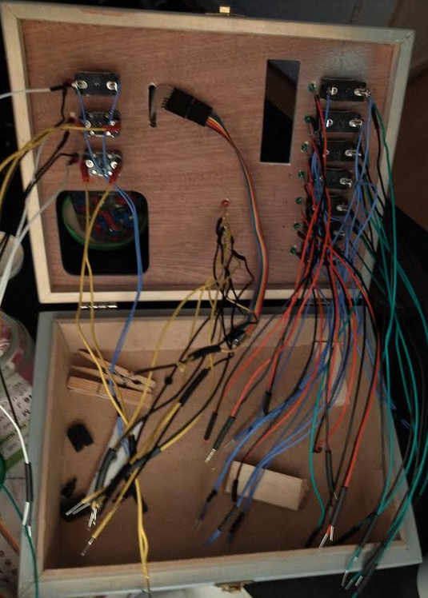
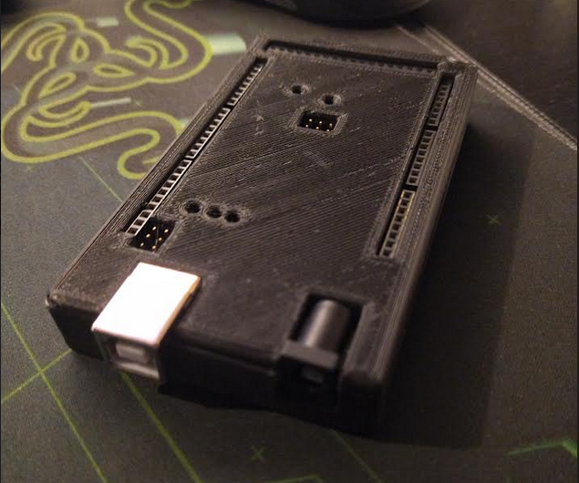
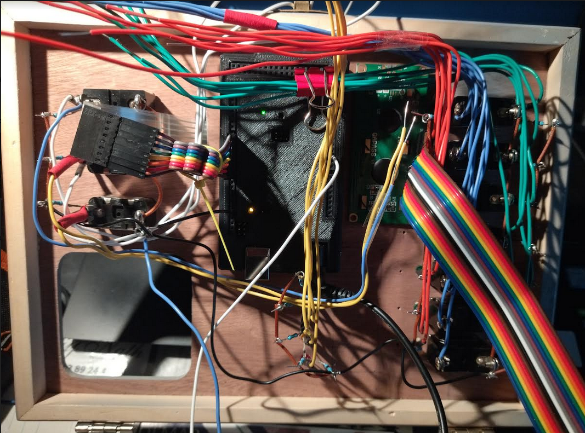
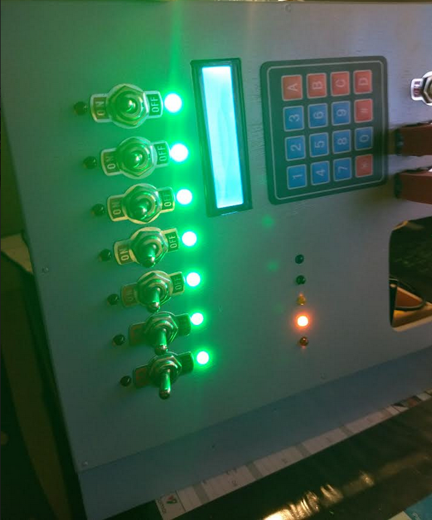

Cette button box est une commande de mon petit-frère, elle comportera un module RTC 1307, un écran 16x2 avec sa carte i2c, un capteur d'humidité DHT11, un buzzer passif, 10 interrupteurs à bascule, un interrupteur d'urgence, 22 LEDS, un module pavé numérique et un arduino MEGA pour toutes les entrées/sorties.
Les fonctionnalités proposées sont: 7 réveils programmables grâce au module RTC. Il seront activables avec les interrupteurs à bascules, un par jour de semaine. Pour les éteindre il faudra presser le bouton d'arrêt d'urgence.
L'écran LCD affichera l'heure, la date, le temps Unix, la température, l'humidité, les réveils actifs, en cycle de 5 secondes.
Le pavé numérique permettra de faire des réglages et des sélections, comme rentrer la date actuelle en cas de remplacement de la pile du DS1307, paramétrer l'heure des réveils ainsi que leurs sonneries, régler un timer, et pour finir l'heure de mise en veille et de réveil, qui éteindra chaque LEDS ainsi que le rétro-éclairage de l'écran LCD, qui seront rallumés le lendemain à l'heure paramétrée.
Les touches de fonctions citées précédement seront les touches A à D sur le pavé numérique. Ces fonctions seront stockées dans l'EEPROM lorsqu'elles seront modifiées, pour conserver l'heure des réveils et autres en cas de coupures de courant.
Il y aura 5 LEDS de couleurs différentes qui s'allumeront aléatoirement pour ajouter un intérêt visuel, comme si l'appareil faisait des calculs.


J'ai imprimé un boîtier que j'ai trouvé sur Thingiverse pour fixer l'arduino au couvercle de la boîte.
Après avoir installé l'arduino j'ai essayé de faire des nappes, et j'ai soudé chaques masses ensemble. J'ai quand même utilisé un multimètre pour voir l'intensité des LEDS, elles faisaient 13.6 mA maximum. J'ai mis des résistances de 220 Ohms sur chacune d'entre elles.
Pour les interrupteurs j'ai utilisé INPUT_PULLUP ce qui me permet de les brancher sans résistances supplémentaires.

Bon le câblage est un peu anarchique mais ça fonctionne toujours. Après avoir fait les nappes j'ai connecté toutes les LEDS et interrupteurs. J'ai utilisé un code pour vérifier les entrées/sorties utilisées par chacun.

Toujours en utilisant mon code de test j'ai testé chaque éléments au fur et à mesure, l'écran et le module RTC sont en i2c et apparemment ils ne fonctionnaient plus.
Pourtant ils fonctionnaient bien avant le câblage car j'avais déjà fait des codes fonctionnels. Après de longues heures, j'en ai déduit que lorsque les deux sont branchés simultanément ça plante.
J'ai donc pensé à utiliser une
bibliothèque qui "simule" une liaison i2c mais sur des prises numériques standards, au lieu des prises i2c physiques sur la carte.
Et après téléversement, ça refonctionne! J'ai donc laissé l'horloge DS1307 sur les prises physiquess i2c mais l'écran est quant à lui branché sur des prises numériques qui simulent une liaison i2c.
L'avantage de la bibliothèque pour l'écran garde la même syntaxe qu'avec la vrai liaison i2c donc je peux l'appliquer facilement à mes codes précédents.
Le projet est toujours en cours de fabrication, je ne mettrai pas le code car il est extrêmement long.